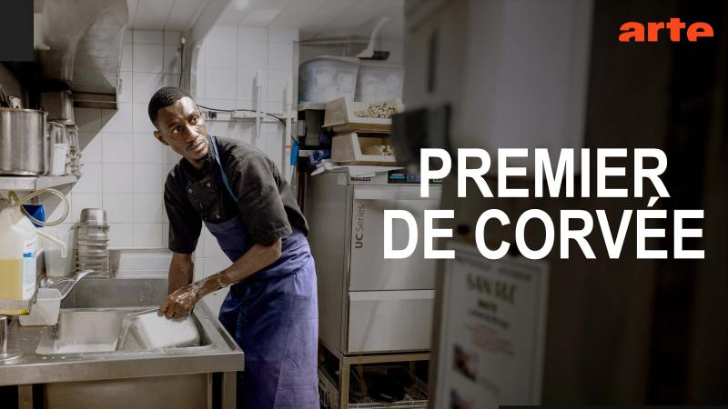

Traductrice — 416 Prod
Film "Premier de corvée" · Diffusé sur ARTE
Traduction du film "Premier de corvée" du soninké vers le français, diffusé sur ARTE. Mission réalisée à Paris dans le cadre d'un CDD chez 416 Prod.
Missions réalisées
- Traduction : traduction du film du soninké vers le français.
- Analyse culturelle : analyse du contexte culturel des personnages pour retranscrire fidèlement leurs propos.
- Collaboration : travail en équipe avec des journalistes professionnels.
- Résultat : film diffusé sur ARTE.
Visuels


Réflexion personnelle
Cette première expérience de traduction audiovisuelle m'a permis de valoriser ma langue maternelle, le soninké, dans un cadre professionnel exigeant. Elle m'a également appris à collaborer efficacement avec une équipe de journalistes, en étant à l'écoute et rigoureuse dans la retranscription du sens et des nuances culturelles propres à la langue.